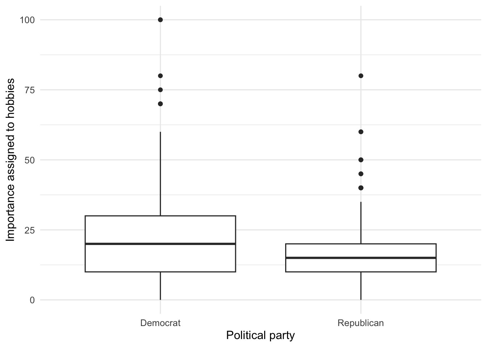

source("scripts/_setup.R")Chapter 15: Nonparametric Statistics
Comparisons and associations based on ranks
Use rank-based tests when quantitative variables are strongly skewed.
Chapter 15 of Exploring Statistics introduces nonparametric tests. These tests convert scores to ranks before comparing groups or examining an association. You will use them with the importance variables, which are strongly skewed and offer one final reminder that real data do not always behave neatly.
Learning Goals
By the end of this chapter, you should be able to:
- choose a nonparametric counterpart for four familiar parametric tests;
- screen the importance variables before conducting an analysis;
- conduct and interpret Mann-Whitney U, Wilcoxon signed-rank, Kruskal-Wallis, and Spearman correlation tests;
- use descriptive statistics and effect sizes to explain significant results; and
- write conclusions that answer each research question.
Research Questions
- Does the importance placed on hobbies and one other aspect of life differ between Democrats and Republicans?
- Do emerging adults value careers or hobbies more? What about a second pair of importance ratings?
- Does career importance differ by adult status? Does hobby importance differ by adult status?
- Is hobby importance related to satisfaction with life? What about another importance rating?
Before You Begin
Each analysis in this chapter is a rank-based counterpart to a test used earlier:
| Research design | Familiar parametric test | Nonparametric test |
|---|---|---|
| two independent groups | independent-samples t test | Mann-Whitney U test |
| two scores from the same participants | paired-samples t test | Wilcoxon signed-rank test |
| three or more independent groups | one-way independent ANOVA | Kruskal-Wallis test |
| association between two quantitative variables | Pearson correlation | Spearman correlation |
The nonparametric tests answer familiar questions but use the relative ranks of scores. Because the importance distributions are skewed, pay particular attention to medians when describing them.
Research Question 1: Importance Ratings And Political Party
In the EAMMi2 study, participants divided 100 points among marriage, parenting, career, and hobbies to show the relative importance of these aspects of life. We will first examine whether Democrats and Republicans differ in the importance they place on hobbies.
Plan The Analysis
| Variable | What it measures | Type | Role |
|---|---|---|---|
IMPhobbies |
importance assigned to hobbies | quantitative | dependent variable |
PartyDichotomous |
Democrat or Republican identification | categorical | grouping variable |
The parametric test for two independent groups is an independent-samples t test. Because the importance ratings are strongly skewed, use its nonparametric counterpart: the Mann-Whitney U test.
The null hypothesis states that the distributions of hobby-importance ratings are the same for Democrats and Republicans. The alternative hypothesis states that the distributions differ.
Get Ready
Open 15-nonparametric-statistics.R, run the setup line, and then run one section at a time.
One thing you should know about conducting research is that people do not always follow instructions exactly. Before analyzing the ratings, check whether participants assigned exactly 100 points across the four variables.
eammi <- eammi |>
mutate(
IMPtotal = IMPmarriage + IMPparenting + IMPcareer + IMPhobbies,
PartyDichotomous = factor(
PartyDichotomous,
levels = c(1, 2),
labels = c("Democrat", "Republican")
),
Adult = factor(
Adult,
levels = c(3, 2, 1),
labels = c("No", "Maybe", "Yes")
)
)
importance_check <- eammi |>
summarise(
FollowedDirections = sum(IMPtotal == 100, na.rm = TRUE),
DidNotFollowDirections = sum(IMPtotal != 100, na.rm = TRUE),
MissingTotal = sum(is.na(IMPtotal))
)
importance_check# A tibble: 1 × 3
FollowedDirections DidNotFollowDirections MissingTotal
<int> <int> <int>
1 1886 183 4IMPtotal is a new variable containing the sum of the four ratings. The check shows that 1,886 participants assigned exactly 100 points, 183 assigned a different total, and four do not have enough information to calculate a total.
Keep the participants whose total is exactly 100. The other observations are set aside for every analysis in this chapter.
importance_data <- eammi |>
filter(IMPtotal == 100)Run The Analysis
First calculate descriptive statistics for each political group.
hobbies_party_data <- importance_data |>
drop_na(IMPhobbies, PartyDichotomous)
hobbies_party_summary <- hobbies_party_data |>
group_by(PartyDichotomous) |>
summarise(
N = n(),
Mean = mean(IMPhobbies),
Median = median(IMPhobbies),
SD = sd(IMPhobbies),
.groups = "drop"
)
hobbies_party_summary# A tibble: 2 × 5
PartyDichotomous N Mean Median SD
<fct> <int> <dbl> <dbl> <dbl>
1 Democrat 965 21.8 20 13.3
2 Republican 445 16.3 15 9.96Now conduct the Mann-Whitney U test.
hobbies_party_test <- wilcox.test(
IMPhobbies ~ PartyDichotomous,
data = hobbies_party_data,
exact = FALSE
)
hobbies_party_test
Wilcoxon rank sum test with continuity correction
data: IMPhobbies by PartyDichotomous
W = 269788, p-value = 3.775e-15
alternative hypothesis: true location shift is not equal to 0For two independent groups, wilcox.test() conducts the Mann-Whitney U test. The test statistic is U. exact = FALSE tells R to use a large-sample calculation because many participants gave equal ratings.
Use rank-biserial correlation to describe the size of the group difference.
hobbies_party_effect <- rank_biserial_independent(
hobbies_party_test,
hobbies_party_data$PartyDichotomous
)
hobbies_party_effect[1] 0.2565081rank_biserial_independent() is supplied by the setup file. Give it the saved test object and the grouping variable used in that test. Values around .10, .30, and .50 can be described as small, medium, and large.
hobbies_party_data |>
ggplot(aes(x = PartyDichotomous, y = IMPhobbies)) +
geom_boxplot() +
labs(
x = "Political party",
y = "Importance assigned to hobbies"
)
Read The Output
The test is significant, so use the descriptive statistics and graph to understand the difference. Democrats assigned a higher median importance to hobbies than Republicans. The rank-biserial correlation falls between the small and medium guidelines.
Before writing your interpretation, choose IMPmarriage, IMPparenting, or IMPcareer and repeat the analysis. Create new object names rather than replacing the hobby objects. Then write one paragraph summarizing both analyses.
Research Question 2: Work Or Play
Do emerging adults value work or play more? Compare IMPcareer with IMPhobbies. The same participants provided both ratings, so the parametric test would be a paired-samples t test. Because the ratings are skewed, use the Wilcoxon signed-rank test.
The null hypothesis states that the distribution of paired differences is centered at zero. The alternative hypothesis states that the ratings differ.
Get Ready
The variables are already available in importance_data. Summarize each one before conducting the test.
career_summary <- importance_data |>
summarise(
N = n(),
Mean = mean(IMPcareer),
Median = median(IMPcareer),
SD = sd(IMPcareer)
)
hobby_summary <- importance_data |>
summarise(
N = n(),
Mean = mean(IMPhobbies),
Median = median(IMPhobbies),
SD = sd(IMPhobbies)
)
career_summary# A tibble: 1 × 4
N Mean Median SD
<int> <dbl> <dbl> <dbl>
1 1886 33.3 30 15.2hobby_summary# A tibble: 1 × 4
N Mean Median SD
<int> <dbl> <dbl> <dbl>
1 1886 20.5 20 12.7Run The Analysis
career_hobby_test <- wilcox.test(
importance_data$IMPcareer,
importance_data$IMPhobbies,
paired = TRUE,
exact = FALSE
)
career_hobby_test
Wilcoxon signed rank test with continuity correction
data: importance_data$IMPcareer and importance_data$IMPhobbies
V = 1015505, p-value < 2.2e-16
alternative hypothesis: true location shift is not equal to 0paired = TRUE tells R that each career rating is paired with the hobby rating in the same observation. The test statistic is V. exact = FALSE uses a large-sample calculation because many participants gave equal ratings.
career_hobby_effect <- rank_biserial_paired(
importance_data$IMPcareer,
importance_data$IMPhobbies
)
career_hobby_effect[1] 0.7756254rank_biserial_paired() is supplied by the setup file. Give it the two variables in the same order used in wilcox.test().
Read The Output
The difference is significant. The descriptive statistics show that emerging adults placed more importance on their careers than their hobbies. The rank-biserial correlation indicates a large difference.
Choose a different pair from IMPmarriage, IMPparenting, IMPcareer, and IMPhobbies. Repeat the summaries, test, and effect-size calculation using new object names. Then write one paragraph summarizing both comparisons.
Research Question 3: Importance Ratings And Adult Status
Does career importance differ among participants who answered no, maybe, or yes when asked whether they consider themselves adults? The parametric test would be a one-way independent ANOVA. Because career importance is skewed, use the Kruskal-Wallis test.
The null hypothesis states that the career-importance distributions are the same across the three adult-status groups. The alternative hypothesis states that at least one group differs.
Run The Analysis
career_adult_data <- importance_data |>
drop_na(IMPcareer, Adult)
career_adult_summary <- career_adult_data |>
group_by(Adult) |>
summarise(
N = n(),
Mean = mean(IMPcareer),
Median = median(IMPcareer),
SD = sd(IMPcareer),
.groups = "drop"
)
career_adult_summary# A tibble: 3 × 5
Adult N Mean Median SD
<fct> <int> <dbl> <dbl> <dbl>
1 No 141 33.9 30 14.9
2 Maybe 488 33.6 30 14.8
3 Yes 1257 33.1 30 15.4career_adult_test <- kruskal.test(
IMPcareer ~ Adult,
data = career_adult_data
)
career_adult_test
Kruskal-Wallis rank sum test
data: IMPcareer by Adult
Kruskal-Wallis chi-squared = 1.0025, df = 2, p-value = 0.6058kruskal.test() uses the familiar outcome ~ group formula. The test statistic is H.
career_adult_effect <- kruskal_epsilon_squared(
career_adult_test,
career_adult_data$Adult
)
career_adult_effect[1] 0kruskal_epsilon_squared() is supplied by the setup file. Give it the saved test and grouping variable. Epsilon-squared values around .01, .08, and .26 can be described as small, medium, and large.
Read The Output
The p value is greater than .05, so career importance does not significantly differ by adult status. Because the overall test is not significant, do not conduct post hoc comparisons.
Now repeat the analysis with IMPhobbies. If the Kruskal-Wallis test is significant, conduct DSCF post hoc comparisons using the following pattern:
dscfAllPairsTest(outcome ~ group, data = data_object)dscfAllPairsTest() uses the same formula pattern and compares every pair while accounting for the number of comparisons. Write one paragraph summarizing the career and hobby analyses.
Research Question 4: Hobby Importance And Satisfaction With Life
Is the importance placed on hobbies related to satisfaction with life? The parametric analysis would be a Pearson correlation. Because hobby importance is skewed, use Spearman correlation.
The null hypothesis states that the population Spearman correlation is zero. The alternative hypothesis states that it is not zero.
Run The Analysis
hobbies_swls_data <- importance_data |>
drop_na(IMPhobbies, SWLS)
hobbies_swls_test <- cor.test(
hobbies_swls_data$IMPhobbies,
hobbies_swls_data$SWLS,
method = "spearman",
exact = FALSE
)
hobbies_swls_test
Spearman's rank correlation rho
data: hobbies_swls_data$IMPhobbies and hobbies_swls_data$SWLS
S = 1222239667, p-value = 5.083e-05
alternative hypothesis: true rho is not equal to 0
sample estimates:
rho
-0.09315736 nrow(hobbies_swls_data)[1] 1886cor.test() was introduced with Pearson correlation. method = "spearman" tells R to correlate ranks instead of the original scores. The coefficient is Spearman’s rs. To report degrees of freedom, subtract 2 from the number of complete observations.
Read The Output
Hobby importance has a small, significant negative association with satisfaction with life. Higher satisfaction-with-life scores are associated with slightly lower importance placed on hobbies. The relationship is close to zero and might not be significant in a smaller sample.
Repeat the Spearman correlation using SWLS and a different importance variable. Create new data and test objects. Then write one paragraph summarizing both correlations.
Check Your Work
Research Question 1
For hobbies, Democrats reported a mean of 21.8, median of 20.0, and standard deviation of 13.3. Republicans reported a mean of 16.3, median of 15.0, and standard deviation of 10.0.
A Mann-Whitney U test found that hobby importance significantly differed between Democrats and Republicans, U = 269,788, p < .001, rrb = .26. The effect was small-to-medium, with Democrats assigning greater importance to hobbies.
The sample extension below uses IMPcareer.
career_party_data <- importance_data |>
drop_na(IMPcareer, PartyDichotomous)
career_party_summary <- career_party_data |>
group_by(PartyDichotomous) |>
summarise(
N = n(),
Mean = mean(IMPcareer),
Median = median(IMPcareer),
SD = sd(IMPcareer),
.groups = "drop"
)
career_party_test <- wilcox.test(
IMPcareer ~ PartyDichotomous,
data = career_party_data,
exact = FALSE
)
career_party_effect <- rank_biserial_independent(
career_party_test,
career_party_data$PartyDichotomous
)
career_party_summary# A tibble: 2 × 5
PartyDichotomous N Mean Median SD
<fct> <int> <dbl> <dbl> <dbl>
1 Democrat 965 35.3 30 15.9
2 Republican 445 29.1 25 13.7career_party_test
Wilcoxon rank sum test with continuity correction
data: IMPcareer by PartyDichotomous
W = 265782, p-value = 4.368e-13
alternative hypothesis: true location shift is not equal to 0career_party_effect[1] 0.2378529Career importance also significantly differed, U = 265,782.5, p < .001, rrb = .24. Democrats reported a mean of 35.3, median of 30.0, and standard deviation of 15.9. Republicans reported a mean of 29.1, median of 25.0, and standard deviation of 13.7. Democrats therefore assigned greater importance to both hobbies and careers.
Research Question 2
Career importance had a mean of 33.3, median of 30.0, and standard deviation of 15.2. Hobby importance had a mean of 20.5, median of 20.0, and standard deviation of 12.7. Participants rated careers as more important than hobbies, V = 1,015,505, p < .001, rrb = .78, a large difference.
The sample extension below compares marriage with hobbies.
marriage_hobby_test <- wilcox.test(
importance_data$IMPmarriage,
importance_data$IMPhobbies,
paired = TRUE,
exact = FALSE
)
marriage_hobby_effect <- rank_biserial_paired(
importance_data$IMPmarriage,
importance_data$IMPhobbies
)
marriage_hobby_test
Wilcoxon signed rank test with continuity correction
data: importance_data$IMPmarriage and importance_data$IMPhobbies
V = 772860, p-value = 6.661e-15
alternative hypothesis: true location shift is not equal to 0marriage_hobby_effect[1] 0.2251412Marriage importance had a mean of 23.4, median of 25.0, and standard deviation of 12.4. Participants rated marriage as more important than hobbies, V = 772,860, p < .001, rrb = .23, a small-to-medium difference.
Research Question 3
Career importance did not significantly differ by adult status, H(2) = 1.00, p = .606, ε² < .001.
hobbies_adult_data <- importance_data |>
drop_na(IMPhobbies, Adult)
hobbies_adult_summary <- hobbies_adult_data |>
group_by(Adult) |>
summarise(
N = n(),
Mean = mean(IMPhobbies),
Median = median(IMPhobbies),
SD = sd(IMPhobbies),
.groups = "drop"
)
hobbies_adult_test <- kruskal.test(
IMPhobbies ~ Adult,
data = hobbies_adult_data
)
hobbies_adult_effect <- kruskal_epsilon_squared(
hobbies_adult_test,
hobbies_adult_data$Adult
)
hobbies_adult_post_hoc <- dscfAllPairsTest(
IMPhobbies ~ Adult,
data = hobbies_adult_data
)
hobbies_adult_summary# A tibble: 3 × 5
Adult N Mean Median SD
<fct> <int> <dbl> <dbl> <dbl>
1 No 141 20.6 15 14.2
2 Maybe 488 21.9 20 12.8
3 Yes 1257 20.0 20 12.4hobbies_adult_test
Kruskal-Wallis rank sum test
data: IMPhobbies by Adult
Kruskal-Wallis chi-squared = 8.88, df = 2, p-value = 0.0118hobbies_adult_effect[1] 0.003653725hobbies_adult_post_hoc No Maybe
Maybe 0.2254 -
Yes 0.9928 0.0094Hobby importance significantly differed by adult status, H(2) = 8.88, p = .012, ε² = .004, although the effect was very small. Participants answering maybe reported greater hobby importance than participants answering yes, p = .009. The no group did not significantly differ from the maybe group, p = .225, or the yes group, p = .993.
Research Question 4
There was a small, significant negative correlation between satisfaction with life and hobby importance, rs(1884) = -.09, p < .001.
The sample extension below uses IMPcareer.
career_swls_data <- importance_data |>
drop_na(IMPcareer, SWLS)
career_swls_test <- cor.test(
career_swls_data$IMPcareer,
career_swls_data$SWLS,
method = "spearman",
exact = FALSE
)
career_swls_test
Spearman's rank correlation rho
data: career_swls_data$IMPcareer and career_swls_data$SWLS
S = 1269129046, p-value = 3.861e-09
alternative hypothesis: true rho is not equal to 0
sample estimates:
rho
-0.1350947 nrow(career_swls_data)[1] 1886There was also a small, significant negative correlation between satisfaction with life and career importance, rs(1884) = -.14, p < .001. Higher satisfaction-with-life scores were associated with lower importance placed on both hobbies and careers.
Chapter Takeaway
Nonparametric tests use ranks to answer familiar questions when a parametric analysis is not appropriate. Match the test to the research design: independent groups, paired scores, three or more independent groups, or an association between quantitative variables.
R Skills Practiced
wilcox.test(outcome ~ group)conducts a Mann-Whitney U test for two independent groups.wilcox.test(x, y, paired = TRUE)conducts a Wilcoxon signed-rank test for paired scores.rank_biserial_independent()andrank_biserial_paired()calculate rank-biserial correlations. These helpers are supplied by the setup file.kruskal.test()conducts a Kruskal-Wallis test.kruskal_epsilon_squared()calculates epsilon squared. This helper is supplied by the setup file.dscfAllPairsTest()conducts DSCF post hoc comparisons.cor.test(..., method = "spearman")conducts a Spearman correlation.